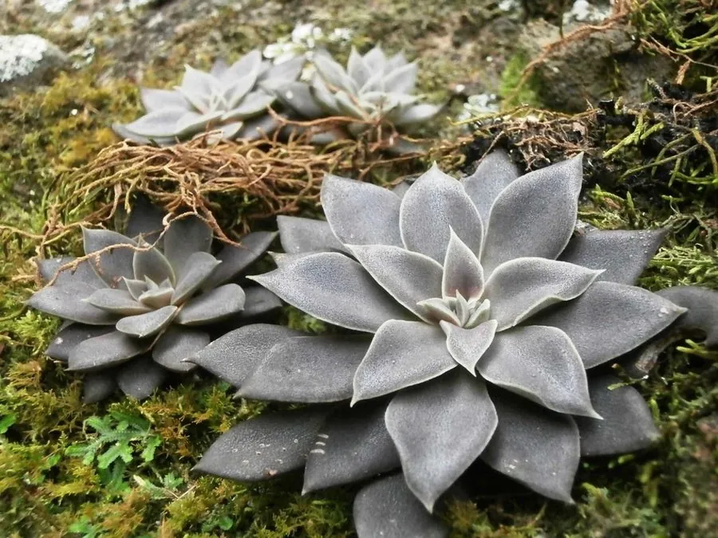

多肉植物 · 植物界
蒂亚 Sedeveria 'Letizia'

景天科风车石莲属肉质植物，由景天属与拟石莲花属杂交而来，叶片绿色、出状态时边缘火红，是易养护的明星多肉。
- 分类
- 门被子植物门纲木兰纲目虎耳草目科景天科属风车石莲属
- 栖息环境
- 园艺杂交种，栽培需光照充足、通风干燥
- 地理分布
- 园艺杂交品种，中国各地广泛栽培
- 保护级别
- 栽培品种，无野生种群；不涉及保护等级
物种志
蒂亚为景天科风车石莲属多年生肉质植物，是景天属与拟石莲花属的杂交后代，茎短粗，叶片排列成紧凑的莲座状。叶片匙形，肥厚，先端尖，表面光滑，常态下为绿色，秋冬光照充足、温差大时叶缘和叶背转为火红色。花期春季，花茎从叶腋抽出，花小，星形，黄白色；蓇葖果，种子细小。
蒂亚为园艺杂交品种，中国各地广泛栽培。它喜光、耐旱，春秋为生长旺季，夏季高温时需遮阴通风；适宜疏松透气、颗粒比例较高的基质，忌积水和闷热。叶色变化明显、养护相对简单，是多肉拼盆和阳台栽培的常用品种；光照不足时叶片拉长、颜色变绿。繁殖以枝插和叶插为主。
形态与习性
- 株型莲座状，叶片紧凑
- 叶色绿色，出状态叶缘火红
- 花期春季，花小、黄白色
- 光照喜光，夏季需遮阴
- 水分耐旱，干透浇透
- 土壤颗粒比例较高的基质
- 主要用途多肉盆栽、拼盆观赏
趣味知识
- 蒂亚是景天属与拟石莲花属的属间杂交后代，兼具两者的优点。
- 秋冬大温差时，它的叶缘会红得像点燃的火焰，因此又名绿焰。
- 蒂亚养护简单、容易出状态，是多肉新手最常入手的品种之一。